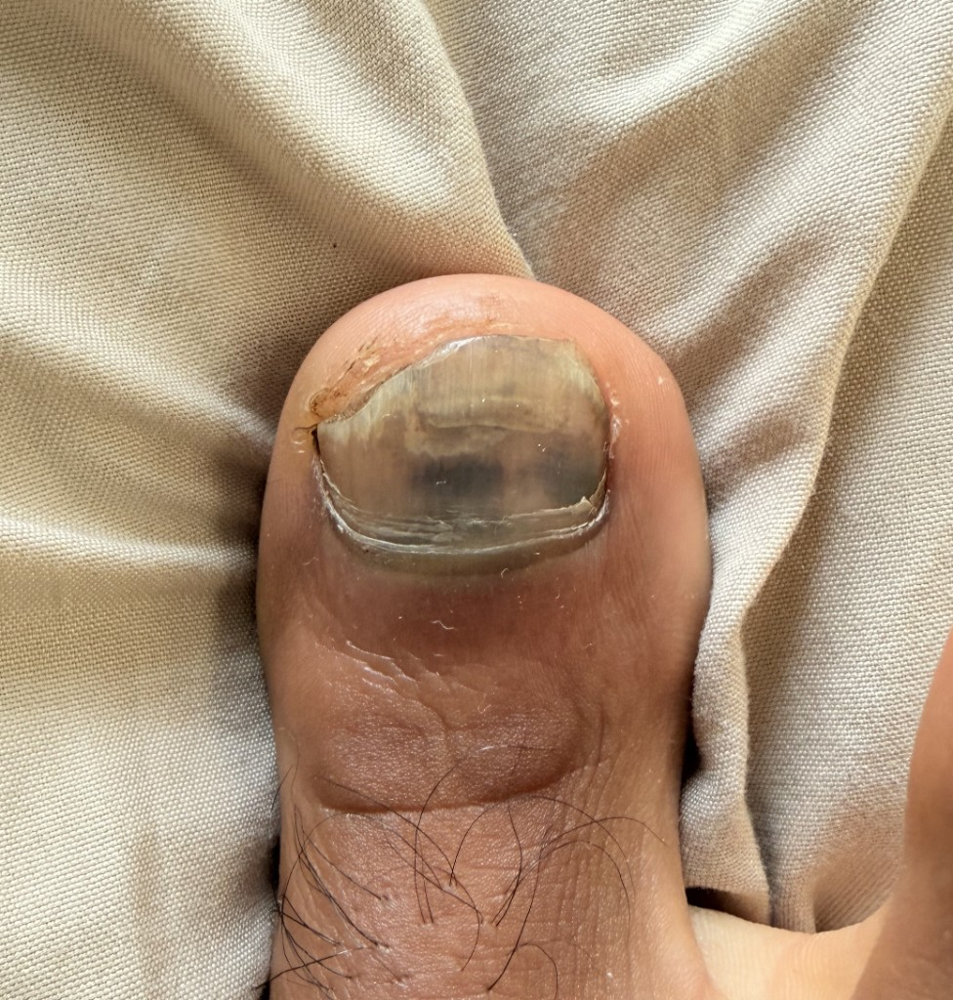
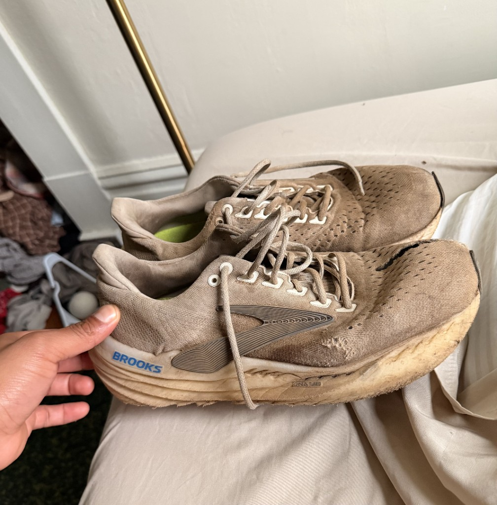

Let me paint you a picture.
I've never run a half-marathon, much less a full marathon. It's end of January. I've just stumbled back from five weeks backpacking South America — hostels, bus rides, questionable wine, and exactly zero structured training runs. I intended to train out there. I really did. But when you're in South America and there's a party at the hostel, or you're spending a few nights stargazing in Patagonia with a French girl, Strava and Garmin don't really win that argument.
I landed back in San Francisco. The second the plane hit the tarmac, I knew. Race day was one week out. I was cooked.
Every day that week, the dread grew a little louder. On Wednesday I ordered the cheapest possible fueling plan off Amazon — Honey Stinger gels and waffles. LMNT electrolyte powder. Caffeine tablets. And a quiet, sincere prayer to God. All from a plan I pulled off Claude and never bothered to gut check. It arrived Thursday. I had made my bed. I was lying in it.
The night before the race, I made one final executive decision. My Altra trail shoes — the ones I'd worn all through Patagonia — never quite felt right on my feet. Bad fit. I'd broken them in plenty but something always felt off, and I'd learned a long time ago to trust that feeling. So I ditched them. I pulled out my beater Brooks instead. A year old, soles well past their prime, zero trail traction. I asked Claude if this was a reasonable call. Claude said it was fine. A decision that would eventually cost me thirteen hours of regret.
I laid out all my gear the night before. Clothes, nutrition, kit — everything organized, everything ready. Got dressed at 3am in the dark race morning, Ubered to the Palace of Fine Arts, and left my drop bag sitting on my bedroom floor. Gone. Forgotten. Oh well.
Found the other runners in the parking lot. Everyone looked calm in the way people look calm right before something terrible happens. I called Johan in Uppsala, Sweden at 4am — he was warm and motivating in the way only a good friend at that hour can be, exactly what I needed. We then loaded onto a yellow school bus, pitch black outside, nobody really talking, and rode out to Rodeo Beach in this strange eerie quiet. Whatever each of us was thinking, we were keeping it to ourselves.
Gun went off at 5:30am.
Thirteen hours later I crossed the finish line. 30th out of 50. Road shoes on trail — no traction, a mistake I felt every single mile. Couldn't walk for two weeks. The most brutal thing I have ever done to my body. Honey Stingers, LMNT, caffeine tablets, and a prayer.
I am not a serious athlete. I had no coach, no program, no business being out there. And that's exactly the point. If I can drag myself across 50 miles on a wing and a prayer, the barrier to doing something that sounds impossible is much lower than you think.
I swore I would never do it again.

